| ・ デコレーション (R01.12.22) | |||
量産の次はデコレーション。スポンジはまだまだ改善の余地があり。そこは自作なのでイチゴはふんだんに使ってカバー。 |
|||
|
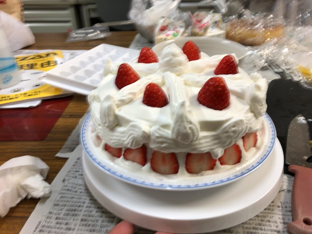
見切り発車でデコレート |
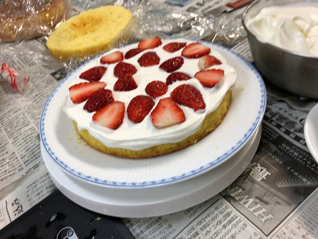
たっぷりのイチゴ | ||
|
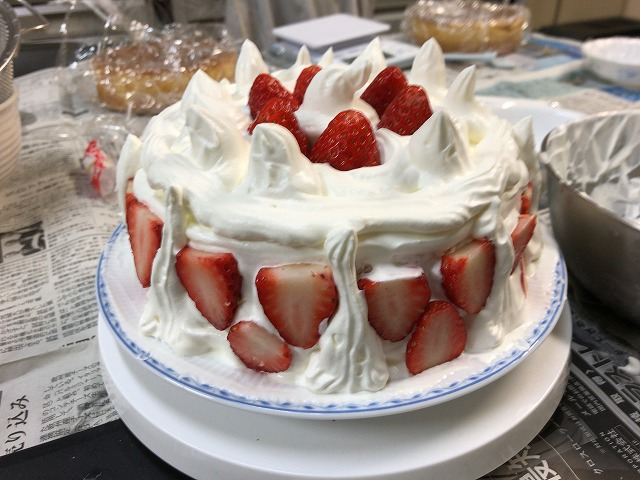
側面にも貼ってみた |
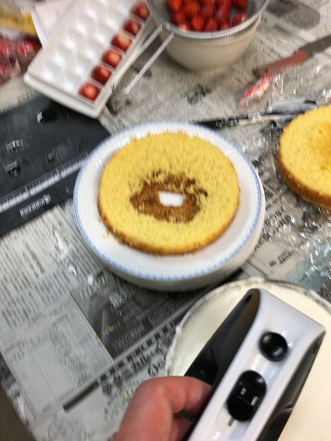
凹んでるので | ||
|
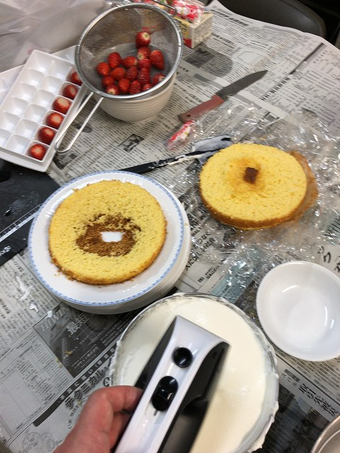
孔がきになる |
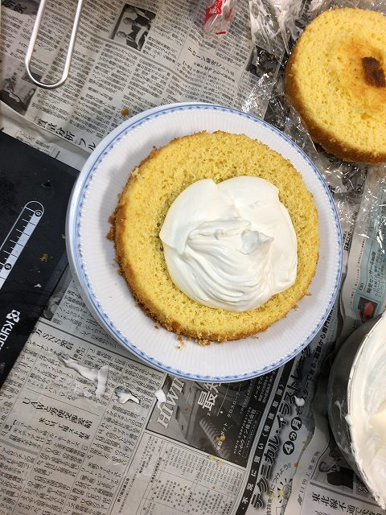
クリームで、圧倒的なクリームで | ||
|
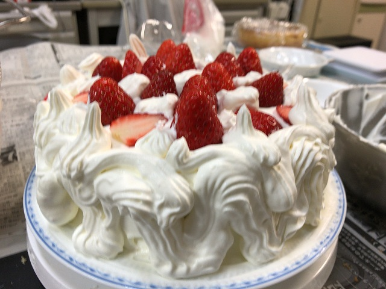
火焔型土器っぽく（あれはカルマン渦説も） |
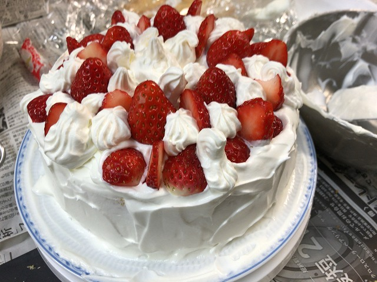
飽きてきた | ||
|
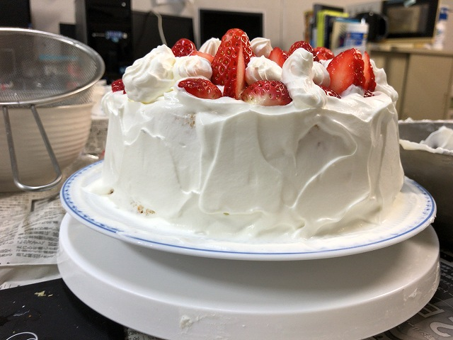
でも側面はそれっぽく |
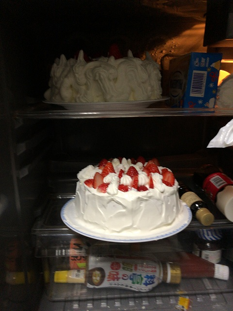
冷蔵庫へ | ||
|
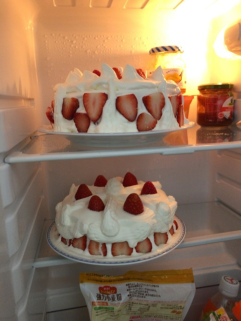
明日まで |
|||